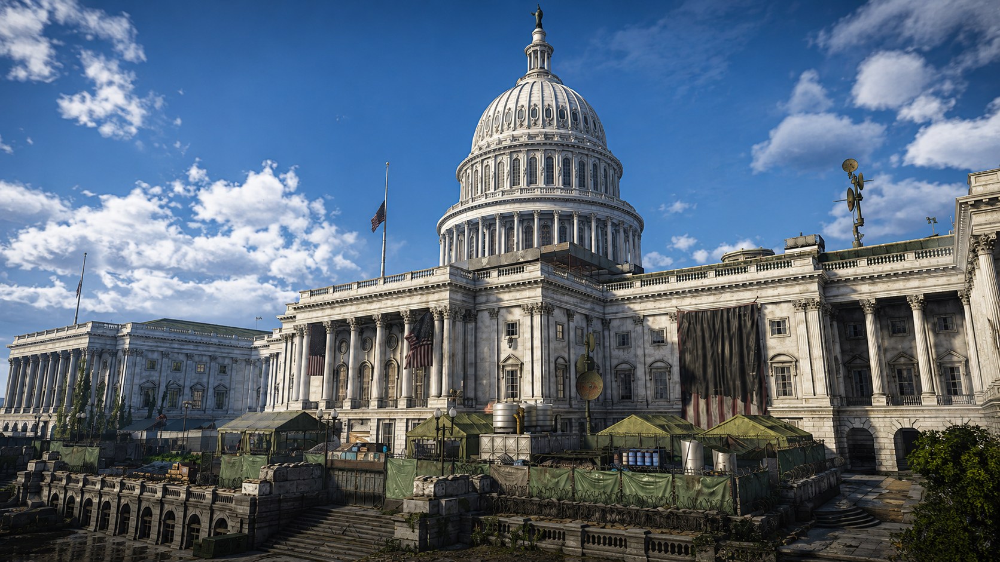

PvE Extremo / Black Tusk
Espaços abertos e pressão por múltiplos ângulos
Diferente de missões mais fechadas, o Capitol Building alterna áreas amplas com pontos de estrangulamento. O grupo precisa controlar visão, evitar flancos e escolher bem o momento de avançar.
O maior erro é tentar vencer só no dano. Em lendária, controle de grupo, habilidades e foco de alvo importam tanto quanto o DPS bruto.
Controle
Elites
Drones
Boss Final
Ver estratégias